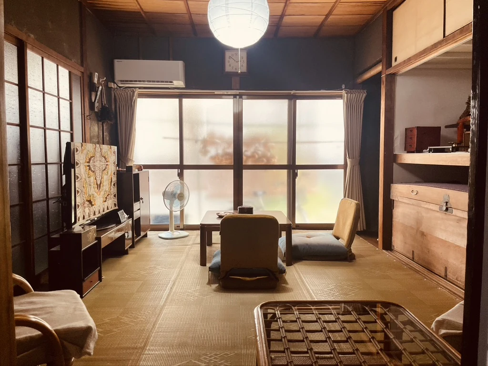
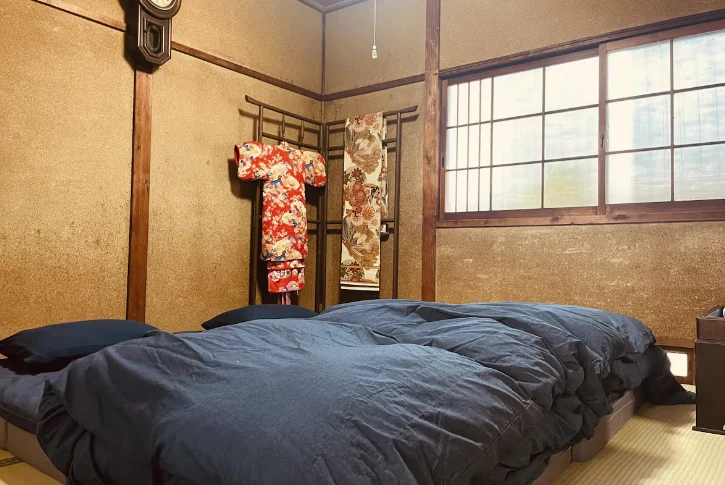
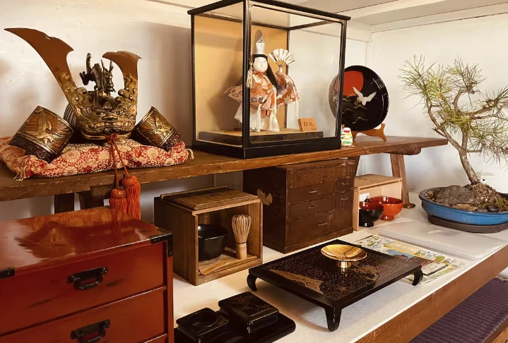
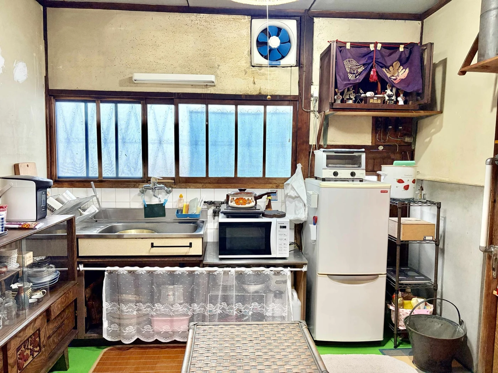
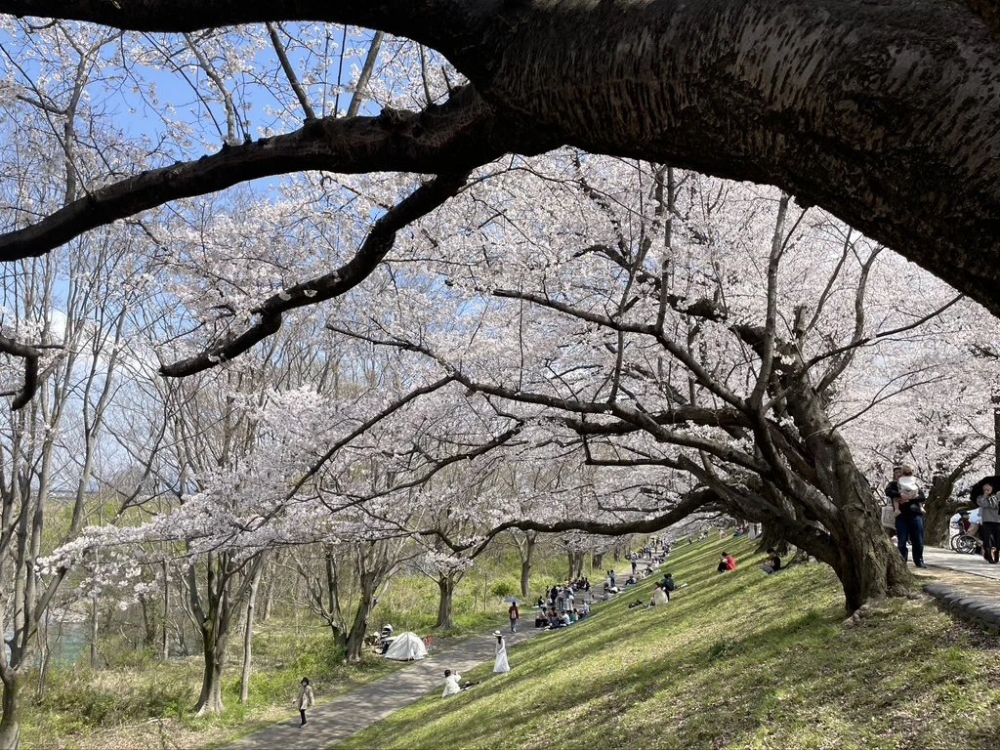
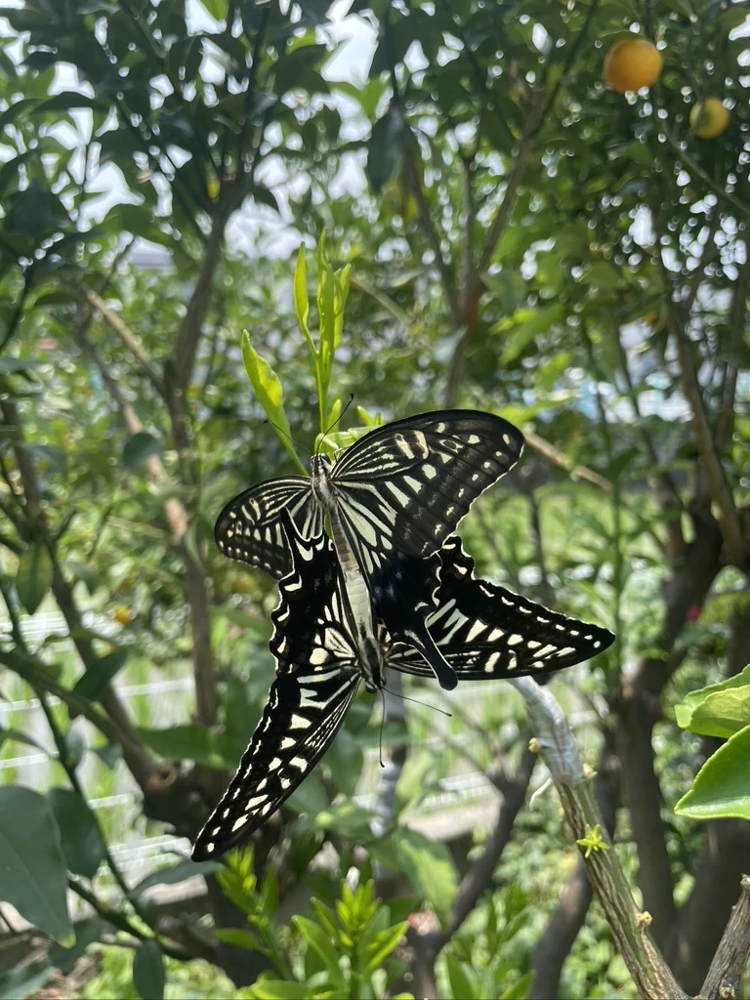
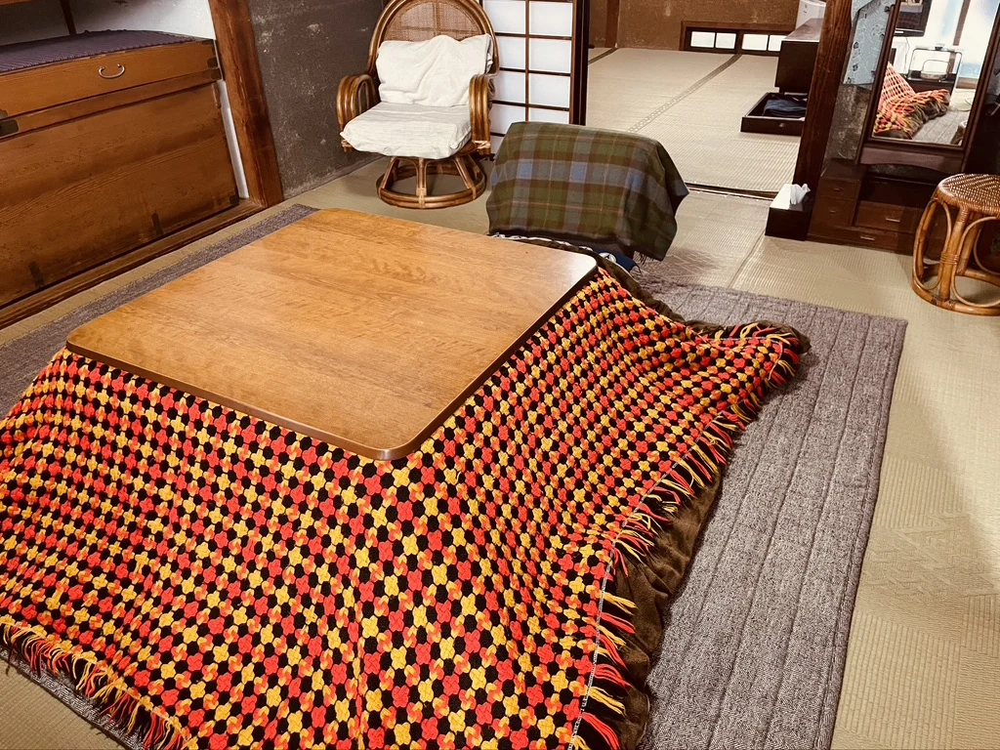
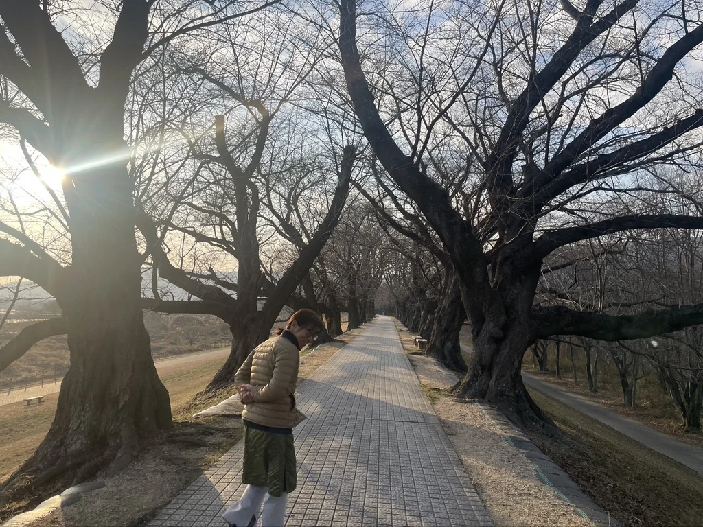
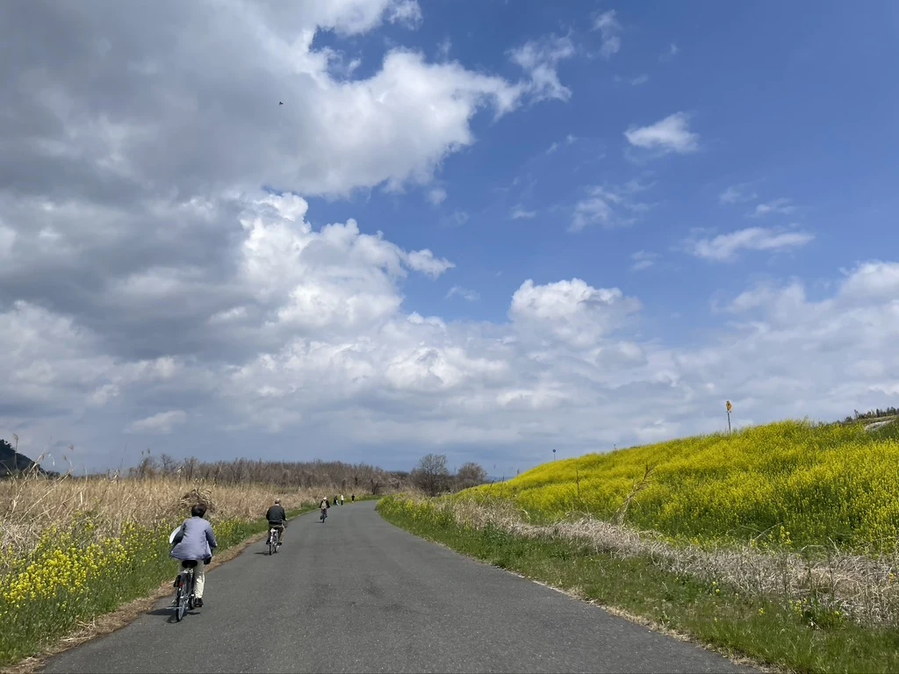
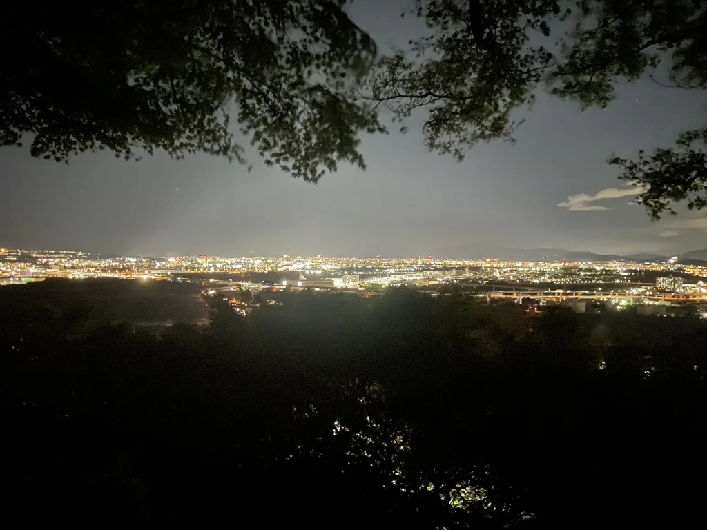

THE HOUSE
Old wood. Tatami. Soft light.
The house is filled with the textures of everyday Showa-era life: wooden frames, patterned glass, tatami rooms and furniture that has stayed with the home for decades.

HIRAKATA, OSAKA, JAPAN
Not a hotel.
A home to remember.
A private traditional Japanese home for one group at a time,
just a 10-minute walk from Kuzuha Station.
OUR STORY
This was the home of our great-aunt.
She lived to be 100 years old. She spent most of her life in this house.
She grew seasonal vegetables in the garden and made kimono, quietly building a life here one day at a time.
Because she cherished the house and made very few major changes, much of its original character remains today.
This is not a centuries-old farmhouse or a historic cultural property. It is simply a small home where an ordinary Japanese person lived an ordinary life.
During the Showa era, homes like this could be found throughout Japan.
As Japan changed, many of these homes were rebuilt and gradually disappeared. What was once ordinary has quietly become something rare.
That is why we call it The Showa House.
Not a hotel.
A home to remember.
We hope that the time you spend here becomes one of the memories you carry home from Japan.

THE HOUSE
The house is filled with the textures of everyday Showa-era life: wooden frames, patterned glass, tatami rooms and furniture that has stayed with the home for decades.

SLEEP
Traditional futons, layered for comfort, in a quiet Japanese room.

DETAILS
Small objects, old craftsmanship and family pieces give every corner its character.

EVERYDAY LIFE
This is not a showroom kitchen. It is a familiar Japanese kitchen where guests can prepare a simple meal and experience the rhythm of home.
LIFE AT THE SHOWA HOUSE





WELCOMED BY
When we travel, we love discovering not only famous landmarks, but also the everyday lives of local people.
The Showa House is the kind of place we would hope to find as travellers ourselves—a quiet home where you can experience ordinary Japanese life, from peaceful streets and traditional houses to the slower rhythm of each day.
The aged furnishings and simple amenities are part of the character of this home. After exploring nearby Kyoto or Osaka, we hope it becomes a place where you can return, relax, and simply feel at home.
If there is anything we can do to make your stay more comfortable, we are always happy to help.
We look forward to welcoming you.
FROM OUR GUESTS
“One of the best Airbnb experiences I have ever had. The house is beautiful, peaceful and full of warmth. Taka, Aya and Akari made this place truly special.”
“The perfect place to recover after travelling through Japan. A traditional home that offers a real local experience you cannot get from a hotel.”

HIRAKATA
Close enough for days in Kyoto and Osaka, yet far enough to return to quiet streets and the everyday rhythm of a local neighborhood.
